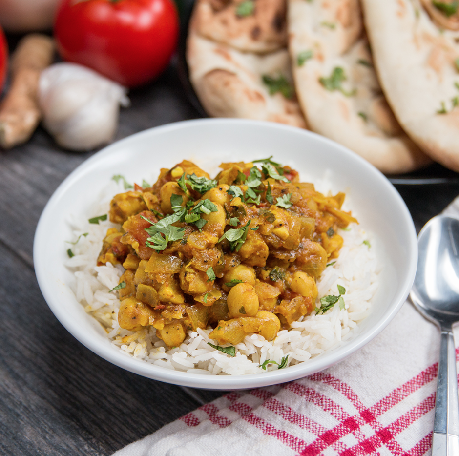

My friday menu
Easy chickpea curry

Ingridiens:
- 1 tablespoon vegetable oil
- 1 large onion, diced
- 2 cloves garlic, minced
- ginger, peeled and grated, 1 inch (2 1/2 cm) piece
- 1 jalapeño, or green chile, seeded and sliced
- 2 tablespoons garam masala
- 1 teaspoon turmeric
- salt,pepper
- 2 cups fresh tomato, diced (400 g)
- 15 oz chickpeas, drained and rinsed, 2 cans (425 g)
- ½ cup water (120 mL)
- 2 tbsp tomato purée
- 410g can red kidney beans
- ½ lemon, juiced
- 10g fresh cilantro,
Method
Heat olive oil in a large stock pot or dutch oven over medium-high heat. Add onion and cook until onion becomes translucent and begins to brown, about 3-5 minutes. Add garlic, ginger, and jalapeño. Continue to cook over medium heat until garlic is fragrant and jalapeño is tender, about 3-4 minutes. Add garam masala, turmeric, salt, and pepper then continue to cook for 1-2 minutes. Add tomatoes, chickpeas, and water. Stir to incorporate, making sure to use the spoon the scrape off any brown bits that have appeared on the bottom or sides of the pot. As the tomatoes break down, the mixture should take on the texture of a thick stew. Add more water if needed before bringing everything to a simmer and then cover with a lid. Once covered, cook for 15 minutes while stirring occasionally. Remove lid, reduce heat to low and mix in the lemon juice and chopped cilantro. Cook over low heat 1-2 minutes until the cilantro has wilted and turned bright green. Serve over basmati rice or with a side of naan. Enjoy!